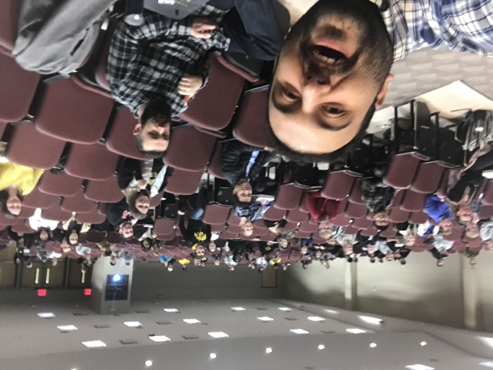

Teaching Interests
Instructor
Instructor evaluation: 5.5/6
Students Evaluations
comments
Graduate Teaching Assistant
In progress
Teaching Evaluation: 5.53/6
Teaching Evaluation: 5.58/6
Teaching Evaluation: 5.05/6
Teaching Evaluation: 5.15/6
Teaching Evaluation: 4.3/6
Students Evaluations
Tutoring and Supervising at the University of Tennessee, Knoxville